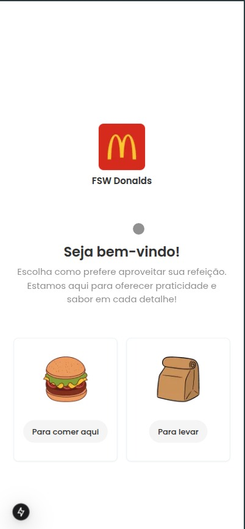
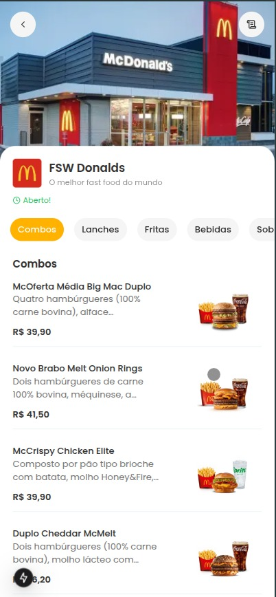
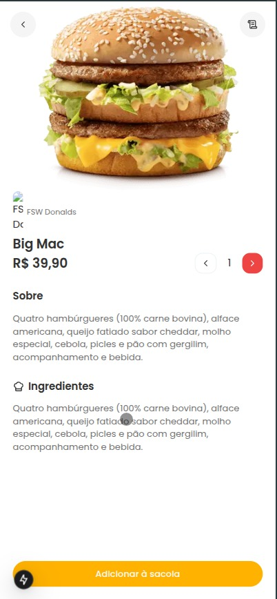

FSW_Donalds
Descrição
O projeto FSW_Donalds é uma simulação dos totens de autoatendimento utilizados em redes de fast-food, como o McDonald's.
Ele foi desenvolvido como um desafio prático, com foco em reproduzir a experiência visual e funcional de um totem real.
O objetivo principal é permitir que o usuário possa simular um pedido completo: desde a escolha de comer no local ou levar, até a seleção de produtos, adição ao carrinho e finalização da compra.
Tecnologias Utilizadas
- Next.js (React Framework)
- Prisma (ORM)
- HTML
- TailwindCSS
- JavaScript
Funcionalidades
- Escolher entre comer no local ou levar
- Visualizar o menu completo com imagens e descrições
- Selecionar produtos e adicionar ao carrinho
- Visualizar resumo do pedido
- Finalizar o pedido (simulação)
Interfaces do Projeto
Abaixo estão capturas de tela que demonstram a interface do projeto em funcionamento:


